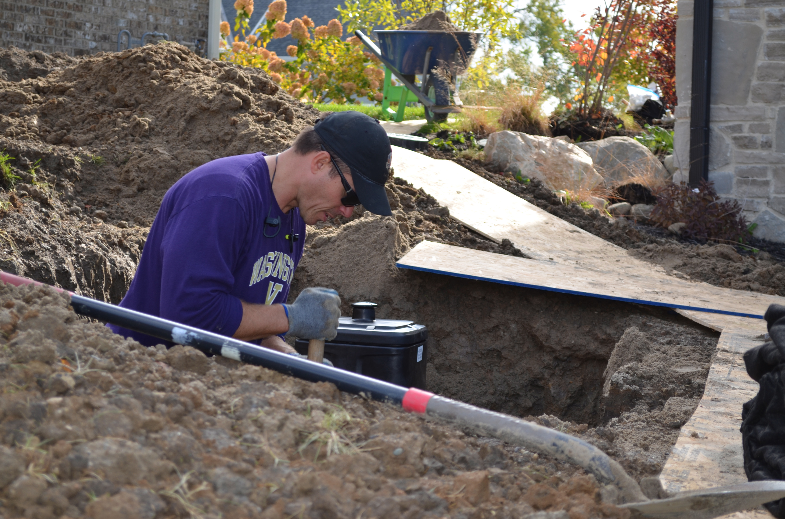

About Chris Tapp
Chris Tapp has 20 plus years landscape experience, working on residential and commercial projects. Chris specializes in pondless waterscapes, landscape design and synthetic turf putting greens. Chris loves to collaborate with clients to bring their vision and dream for their outdoor space to life. Chris has created custom designed spaces in Indiana, Minnesota, Washington and Illinois and he'd love to work with you on your next outdoor project.
